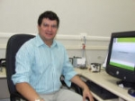

Team / Coordinator

Name: Gutemberg França
Title: PhD
Institution: Universidade Federal do Rio de Janeiro - IGEO / UFRJ-IGEO
Phone: (021) 2598-9470 R.22
E-mail: gutemberg@lma.ufrj.br
Lattes-CV: http://lattes.cnpq.br/2544946020114873
Title: PhD
Institution: Universidade Federal do Rio de Janeiro - IGEO / UFRJ-IGEO
Phone: (021) 2598-9470 R.22
E-mail: gutemberg@lma.ufrj.br
Lattes-CV: http://lattes.cnpq.br/2544946020114873
Address:
Universidade Federal do Rio de Janeiro
Av. Athos da Silveira Ramos, 274
Cidade Universitária, Ilha do Fundão, IGEO/Departamento de Meteorologia - Bloco G Ilha do Fundão
21941-916 - Rio de Janeiro, RJ - Brasil
Av. Athos da Silveira Ramos, 274
Cidade Universitária, Ilha do Fundão, IGEO/Departamento de Meteorologia - Bloco G Ilha do Fundão
21941-916 - Rio de Janeiro, RJ - Brasil
Gutemberg Borges França has a degree in Physics at the Federal University of Mato Grosso do Sul (UFMS/1985), Master’s degree at INPE/1988 and PhD at University of Dundee (United Kingdom/1994). He is a Professor at the Meteorology Department at UFRJ and Coordinator at the Applied Meteorology Laboratory (LMA/UFRJ).
Bibliographical production
Papers published in peer-reviewed journals
| 2014 |
FRANÇA, GUTEMBERG BORGES ; OLIVEIRA, ANTONIO NASCIMENTO DE ; PAIVA, CÉLIA MARIA ; PERES, LEONARDO DE FARIA ; SILVA, MICHAEL BEZERRA DA ; OLIVEIRA, LUCIANA MARIA TEMPONI DE . A Fire-Risk-Breakdown System for Electrical Power Lines in the North of Brazil. Journal of Applied Meteorology and Climatology, v. 53, p. 813-823, 2014. |
| 2013 |
FRANÇA, G. B. ou Gutemberg Borges França ; PAES, R. C. O. V. ; OLIVEIRA, A. N. ; RUIVO, B. C. ; SARTORI NETO, Angelo . Daily Blended Microwave and Infrared Sea Surface Temperature Composition. Revista Brasileira de Geofísica (Impresso), v. 31, p. 317-328, 2013. |
| 2013 |
LIMA, J. A. M. ; MARTINS, R. P. ; TANAJURA, C. A. S. ; PAIVA, A. M. ; CIRANO, M. ; CAMPOS, E. J. D. ; SOARES, I. D. ; FRANÇA, G. B. ou Gutemberg Borges França ; OBINO, R. S. ; ALVARENGA, J. B. R. . Design and implementation of the Oceanographic Modeling and Observation Network (REMO) for operational oceanography and ocean forecasting. Revista Brasileira de Geofísica (Impresso), v. 31, p. 207-228, 2013. |
| 2011 |
Paiva, Cà lia Maria ; FRANÇA, G. B. ou Gutemberg Borges França ; Liu, William Tse Horng ; Rotunno Filho, Otto Corrêa . A comparison of experimental energy balance components data and SEBAL model results in Dourados, Brazil. International Journal of Remote Sensing (Print), v. 32, p. 1731-1745, 2011. |
| 2011 |
OLIVEIRA, L. M. T. ; FRANÇA, G. B. ou Gutemberg Borges França . VARIAÇÕES DO PARÂMETRO BIOFÍSICO FAPAR AO LONGO DO ANO E SUA UTILIZAÇÃO NA INDICAÇÃO DA ATIVIDADE FOTOSSINTÉTICA. Revista Brasileira de Cartografia (Impresso), v. 63, p. 85-91, 2011. |
| 2010 |
L. M. T. Oliveira ; FRANÇA, G. B. ou Gutemberg Borges França ; R. M. Nicácio ; M. A. H. Antunes ; T.C.C. Costa ; A. R. Torres JR ; J. R. A. França . A study of El Niño-Southern Oscilation influence on vegetation indices in Brazil using time serie analysis from 1995 to 1999. International Journal of Remote Sensing (Print), v. 31, p. 423-437, 2010. |
| 2004 |
FRANÇA, G. B. ou Gutemberg Borges França ; CARVALHO, W. S. . SST GOES-8 Estimation Approach for Brazilian Coast. International Journal of Remote Sensing, Aprovado para publicação, v. 25, n. 17, p. 3439-3450, 2004. |
| 2003 |
AÑAZCO, J. R. ; FRANÇA, G. B. ou Gutemberg Borges França . Modelagem de estrutura Convergentes do Campo superficial de correntes na Bacia de Campos (RJ). Revista Brasileira de Geofísica (Impresso), v. 21, p. 85-104, 2003. |
| 1995 |
FRANÇA, G. B. ou Gutemberg Borges França ; CRACKNELL, A. P. . A simple cloud masking approach using NOAA AVHRR daytime data for tropical areas. International Journal of Remote Sensing, Taylor & Francis Ltd, v. 16, n. 9, p. 1697-1705, 1995. |
| 1994 |
FRANÇA, G. B. ou Gutemberg Borges França ; CRACKNELL, A. P. . Retrieval of land and sea surface temperature using NOAA-11 AVHRR data in north-eastern Brazil. International Journal of Remote Sensing, Talor & Francis Ltd, v. 15, n. 8, p. 1695-1712, 1994. |
Complete works published in proceedings of conferences
| 2014 |
LIMA, C. N. N. ; Fernandes, C. A. C. ; Franà a, Gutemberg Borges ; MATOS, G. G. . Estimação do Impacto do El Niño/La Niña na Intensidade dos Ventos do Nordeste Brasileiro. In: 21º SINAPE - Simpósio Nacional de Probabilidade e Estatística, 2014, Natal. Anais do 21º SINAPE - Simpósio Nacional de Probabilidade e Estatística, 2014. |
| 2012 |
Rodrigues, J. C. ; ALBUQUERQUE NETO, F. L. ; FRANÇA, G. B. ou Gutemberg Borges França . Estimativa dos parâmetros micrometeorológicos e avaliação da aplicabilidade da teoria da similaridade de Monin-Obukhov na área do aeroporto Internacional de São Paulo via SODAR. In: XVII CONGRESSO BRASILEIRO DE METEOROLOGIA, 2012, Gramado. XVII CONGRESSO BRASILEIRO DE METEOROLOGIA, 2012. |
| 2012 |
DAHER, V. B. ; PAES, R. C. O. V. ; FRANÇA, G. B. ou Gutemberg Borges França . Refinement of the Surface Current Fields Estimated by Remote Sensing. In: IEEE International Geoscience and Remote Sensing Symposium, 2012, Munich. IEEE International Geoscience and Remote Sensing Symposium, 2012. |
| 2012 |
MELLO, J. X. ; SOUSA, R. C. ; ALBUQUERQUE NETO, F. L. ; FRANÇA, G. B. ou Gutemberg Borges França . Potencial uso do SODAR para otimização dos procedimentos operacionais no Aeroporto do Galeão: Estudo de caso. In: Congresso Brasileiro de Meteorologia, 2012, Gramado. Anais XVII Congresso Brasileiro de Meteorologia, 2012. |
| 2012 |
SOUSA, R. C. ; MELLO, J. X. ; Costa, R. M. A. ; ALBUQUERQUE NETO, F. L. ; FRANÇA, G. B. ou Gutemberg Borges França . Comportamento da temperatura da superfície do mar versus advecção de massa de ar para região serrana do Rio de Janeiro: Observação via SODAR. In: Congresso Brasileiro de Meteorologia, 2012, Gramado. Anais XVII Congresso Brasileiro de Meteorologia, 2012. |
| 2012 |
OLIVEIRA, A. N. ; FRANÇA, G. B. ou Gutemberg Borges França ; Peres, L. F. . USO DE ESTIMADOR ÓTIMO PARA ESTIMATIVA DA TEMPERATURA DA SUPERFÍCI E DO MAR: ESTUDO DA SENSIBILIDADE. In: Congresso Brasileiro de Meteorologia, 2012, Gramado. Anais XVII Congresso Brasileiro de Meteorologia, 2012. |
| 2011 |
PAIVA, Celia Maria ; Rodrigo Yoiti Tsukahara ; FRANÇA, G. B. ou Gutemberg Borges França ; NICÁCIO, Rosilene Mendonça . Estimativa da evapotranspiração via sensoriamento remoto para fins de manejo de irrigação. In: XV Simpósio Brasileiro de Sensoriamento Remoto, 2011, Curitiba. Anais XV Simpósio Brasileiro de Sensoriamento Remoto - SBSR, 2011. |
| 2010 |
FRANÇA, G. B. ou Gutemberg Borges França ; RUIVO, B. C. ; OLIVEIRA, A. N. ; SARTORI NETO, Angelo . Application of Barnes Objective Analysis Method as Surface temperature data via Multi-satellite. In: AGU meeting of the Americas, 2010, Foz de Iguaçu. AGU 2010, 2010. |
| 2010 |
PAES, R. C. O. V. ; FRANÇA, G. B. ou Gutemberg Borges França ; DAHER, V. B. ; SARTORI NETO, Angelo ; EBECKEN, Nelson Francisco Favilla . Methodology for Eddies Recognition From Satelite Images. In: IEEE International Geoscience and Remote Sensing Symposium, 2010, Honolulu. IEEE International Geoscience and Remote Sensing Symposium, 2010. p. 2856-2859 |
| 2009 |
TEMPONI, Luciana ; FRANÇA, G. B. ou Gutemberg Borges França . Estudo da FAPAR em regiões fitoecológicas brasileiras através de série temporal derivada do NDVI/AVHRR. In: XIV Simpósio Brasileiro de Sensoriamento Remoto, 2009, Natal. Anais do XIV Simpósio Brasileiro de Sensoriamento Remoto, 2009. |
| 2008 |
LORENZZETTI, J. ; KAMPEL, M. ; FRANÇA, G. B. ou Gutemberg Borges França ; SARTORI NETO, Angelo . An assessment of the usefulness of sar images to help better locating the Brazil current surface inshore front. In: The 2dn International workshop on advances in sar oceanography from Envisat and ERS missions, 2008, Frascati - Roma. The 2dn International workshop on advances in sar oceanography from Envisat and ERS missions (http://earth.esa.int/workshops/seasar2008/), 2008. |
| 2007 |
PAIVA, Celia Maria ; TEMPONI, Luciana ; FRANÇA, G. B. ou Gutemberg Borges França ; NICÁCIO, Rosilene Mendonça . Análise dos efeitos do déficit hídrico na resposta temporal do índice de vegetação por diferença normalizada (NVDI) em diferentes condições climáticas do território brasileiro. In: XXXVI Congresso Brasileiro de Emgenharia Agrícola, 2007, Bonito. XXXVI Congresso Brasileiro de Engenharia Agrícola, 2007. v. 1. |
| 2007 |
FRANÇA, G. B. ou Gutemberg Borges França ; PAIVA, Celia Maria ; FRANÇA, José Ricardo de A ; MAIA, Luiz Francisco Pires Guimarães ; OLIVEIRA, L. M. T. ; CORREA, E. B. ; OLIVEIRA, A. N. ; SILVA, M. B. ; Rosa Filho, R. N. . Implantação de sistema de monitoramento de risco de incêndio nas linhas de transmissão no trecho Imperatriz-Presidente Dutra (Maranhão). In: XIX Seminário nacional de produção e transmissão de energia elétrica, 2007, Rio de janeiro. XIX Seminário nacional de produção e transmissão de energia elétrica (SNPTEE), 2007. |
| 2007 |
TEMPONI, Luciana ; FRANÇA, G. B. ou Gutemberg Borges França ; NICÁCIO, Rosilene Mendonça ; COSTA, T. C. E. C. ; ANTUNES, M. A. H. . Análise do comportamento das regiões fitoecológicas brasileira através de série temporal de NDVI. In: XII Simpósio Brasileiro de sensoriamento remoto, 2007, Florianópolis. Anais XII Simpósio Brasileiro de sensoriamento remoto, 2007. p. 1765-17773 |
| 2007 |
PAIVA, Celia Maria ; OLIVEIRA, L. M. T. ; FRANÇA, G. B. ou Gutemberg Borges França ; NICÁCIO, Rosilene Mendonça . ANÁLISE DOS EFEITOS DO DÉFICIT HÍDRICO NA RESPOSTA TEMPORAL DO ÍNDICE DE VEGETAÇÃO POR DIFERENÇA NORMALIZADA (NDVI) EM DIFERENTES CONDIÇÕES CLIMÁTICAS DO TERRITÓRIO BRASILEIRO. In: XXXVI Congresso Brasileiro de Engenharia Agrícola, 2007, Bonito. anais do XXXVI Congresso Brasileiro de Engenharia Agrícola, 2007. |
| 2006 |
OLIVEIRA, L. M. T. ; FRANÇA, G. B. ou Gutemberg Borges França ; NICÁCIO, Rosilene Mendonça ; TORRES JR, Audalio Rebelo ; FRANÇA, José Ricardo de Almeida . Espacialização da influência do enos sobre a variabilidade interanual da vegetação no Brasil através de dados EFAI-NDVI. In: XIV Congresso Brasileiro de Meteorologia, 2006, Florianópolis. Anais do XIV Congresso Brasileiro de Meteorologia, 2006. |
| 2005 |
PAIVA, Celia Maria ; ROTUNNO FILHO, Otto Correa ; LIU, Willian Tse Horng ; FRANÇA, G. B. ou Gutemberg Borges França . ANÁLISE DE SENSIBILIDADE DO MODELO SEBAL QUANTO ÀS VARIÁVEIS DE INICIALIZAÇÃO . In: XVI Simpósio Brasileiro de Recursos Hídricos, 2005, Joâo Pessoa. XVI Simpósio Brasileiro de Recursos Hídricos, 2005. |
| 2004 |
ALEMEIDA, Manoel Valdonel de ; EBECKEN, Nelson F F ; FRANÇA, G. B. ou Gutemberg Borges França . Previsão meteorológica de curto prazo para aeródromo usando redes neurais artificiais. In: XIII Congresso Brasileiro de meteorologia, 2004, Fortaleza, 2004. |
| 2004 |
SOLER, Luciana de Souza ; CASTILHO, José Guilherme ; BAPTISTA, Marlos Carneiro ; FRANÇA, G. B. ou Gutemberg Borges França ; LANDAU, Luiz . Comparison study between texturak an neural network classifiers using synthetic aperture radar images. In: XX ISPRS congress, 2004, Istambul, 2004. |
| 2004 |
BARBOSA, Felipe Leonardo ; MORALES, Carlos Augusto ; FRANÇA, G. B. ou Gutemberg Borges França ; LANDAU, Luiz . RAINFALL ESTIMATION USING SATELLITE DATA FOR PARAÍBA DO SUL BASIN. In: XX ISPRS congress, 2004, Istambul. XX ISPRS congress, 2004. v. xxxv. p. 1257- |
| 2004 |
PAIVA, Celia Maria ; LIU, Willian Tse Horng ; FRANÇA, G. B. ou Gutemberg Borges França ; ROTUNNO FILHO, Otto Correa . Estimativa das componentes de energia via satélite através do modelo SEBAL. In: XIII Congresso Brasileiro de meteorologia, 2004, Fortaleza. XIII Congresso Brasileiro de meteorologia, 2004. |
| 2004 |
ALMEIDA, M. V. ; EBECKEN, Nelson Francisco Favilla ; FRANÇA, G. B. ou Gutemberg Borges França . Meteorologia de curto prazo para aeródromo usando redes neurais artificiais. In: XIII Congresso Brasileiro de Meteorologia, 2004, Fortaleza. Anais do XIII Congresso Brasileiro de Meteorologia, 2004. |
| 2003 |
FRANÇA, G. B. ou Gutemberg Borges França ; CARAPIÁ, Vânia ; SILVA, Ricardo Marcelo ; LANDAU, Luiz ; TORRES, Audalio Rebelo ; MAIA, Luis . Monitoramento de Risco de Incêndios no Parque Nacional da Tijuca e nas áreas onde se situam as Linhas de Transmissão. In: Citenel - II Congresso de Inovação Tecnológica em Energia Elétrica, 2003, Salvador. Anais do II Citenel, 2003. v. I. p. 1154-1158 |
| 2003 |
FRANÇA, G. B. ou Gutemberg Borges França ; MAIA, Luis . Caracterização das Descargas Atmosféricas na Área de Concessão da LIGHT no Estado do Rio de Janeiro. In: Citenel - II Congresso de Inovação Tecnológica em Energia Elétrica, 2003, Salvador. Anais do II Citenel, 2003. v. I. p. 1131-1138 |
| 2003 |
FRANÇA, G. B. ou Gutemberg Borges França ; LANDAU, Luiz ; TORRES JR, Audalio Rebelo ; ALVES, Jld ; CUNHA, Gg ; ALMEIDA, Ricardo Carvalho de ; PEDROSO, E. C. ; BEISL, Ch . Operational approach for oil spill monitoring. In: SPIE's Third International Asia-Pacif Environmental Remote Sensing 2002, 2003, China. SPIE's Third International Asia-Pacif Environmental Remote Sensing 2002 - Remote Sensing of Atmosphere, Ocean, Envirnment and Space, 2003. v. 1. p. 489-493 |
| 2002 |
FRANÇA, G. B. ou Gutemberg Borges França ; TORRES JR, ; FRAGOSO, Maurício R ; SANTOS, F A ; LANDAU, Luiz ; ALVES, Jld ; PEDROSO, Ec ; BEISL, Ch . Data Infrastructure from Oil Contingency planning in the brazilian continental margin. In: Seventh International Conference on Remote Sensing for Marine and Coastal Environments, 2002, Miami. Seventh International Conference on Remote Sensing for Marine and Coastal Environments, 2002. v. 1. |
| 2002 |
FRANÇA, G. B. ou Gutemberg Borges França ; PALMEIRA, Flb ; PAIVA, Mc . Estimativa da Emissividade e da Temperatura da superfície continental via dados do sensor AVHRR/NOAA-14. In: XII Congresso Brasileiro de Meteorologia, 2002, Foz do Iguaçú. XII Congresso Brasileiro de Meteorologia, 2002. v. 1. |
| 2002 |
FRANÇA, G. B. ou Gutemberg Borges França ; LANDAU, Luiz ; TORRES JR, ; ALVES, Jld ; CUNHA, Gg ; ALMEIDA, Rc ; PEDROSO, Ec ; BEISL, Ch . Marine Oil Spill monitoring in Brazil. In: Spies Third International Asia-pacific Environmental Remote Sensing, 2002, . Spies Third International Asia-pacific Environmental Remote Sensing 2002- Remote Sensing of atmosphere, ocean, environment and space, 2002. v. 1. |
| 2002 |
FRANÇA, G. B. ou Gutemberg Borges França ; TORRES JR, . Oil Spill fate forecast system from Ilha Grande Bay, Rio de Janeiro, Brasil. In: Third International Conference on Oil Spill 2002/ First International Conference on Oil and Hydrocarbon Spill: Modelling, Analysis and Control, 2002, Rhodes. Oil and Hydrocarbon Spill II- Modelling, Analysis and Control, 2002. v. Único. p. 47-56 |
| 2001 |
FRANÇA, G. B. ou Gutemberg Borges França ; PAIVA, Mc ; ROTUNNO FILHO, Oc . Determinação de evapotranspiração in situ pelo método do balanço de radiação-razão de Bowen para calibração do modelo SEBAL de obtenção de fluxos à superfície por satélite. In: XIV Simpósio Brasileiro de Recursos Hídricos/ V Simpósio de Hidráulica e Recursos Hídricos dos Países de Língua Oficial Portuguesa, 2001, Aracaju. XIV Simpósio Brasileiro de Recursos Hídricos/ V Simpósio de Hidráulica e Recursos Hídricos dos Países de Língua Oficial Portuguesa, 2001. v. 1. p. 1-17 |
| 2001 |
FRANÇA, G. B. ou Gutemberg Borges França ; CARVALHO, Ws . Estimativa da temperatura da superfície na costa brasileira utilizando dados GOES-8. In: Revista Naval, 2001, . Revista Naval, 2001. p. 311-319 |
| 2000 |
FRANÇA, G. B. ou Gutemberg Borges França . Procedure of sea surface temperature using GOES-8 data in Brazil. In: Sixth International Conference Remote Sensing From Marine and Coastal Environments, 2000, Charleston. Sixth International Conference Remote Sensing From Marine and Coastal Environments, 2000. |
| 2000 |
FRANÇA, G. B. ou Gutemberg Borges França ; CARVALHO, W. S. ; GONDIM, M. A. . Estimativa da temperatura da superfície do mar utilizando GOES-8 no CPTEC-INPE. In: XI Congresso Brasileiro de Meteorologia, 2000, Rio de Janeiro. XI Congresso Brasileiro de Meteorologia, 2000. |
| 2000 |
PAIVA, Celia Maria ; LIU, T. G. ; FRANÇA, G. B. ou Gutemberg Borges França . Determinação da evapotranspiração da cultura de trigo pelo método do balanço de energia - razão Bowen - para Londrina (PR). In: XI Congresso Brasileiro de Meteorologia, 2000, Rio de Janeiro. XI Congresso Brasileiro de Meteorologia, 2000. |
| 2000 |
LANDAU, Luiz ; FRANÇA, G. B. ou Gutemberg Borges França ; PEDROSO, E. C. . Metodologia do Centro Brasileiro de Recursos RADARSAT - CBRR/COPPE para eventos de derrames de óleo em ambiente marinhos. In: II Simpósio sobre medidas oceanográficas com recursos espaciais, 2000, Arraial do Cabo. II OCSAT - Simpósio sobre medidas oceanográficas com recursos espaciais, 2000. |
| 1998 |
FRANÇA, G. B. ou Gutemberg Borges França ; CEBALLOS, J. C. ; MACHADO, L. A. T. ; HALLAK, R. C. G. ; NOBRE, C. A. . Satellite-based products for monitoring of weather in South America. In: 9th Conference on satellite meteorology and oceanography, 1998, Paris. Proceending of the 9th Conference on satellite meteorology and oceanography, 1998. |
| 1998 |
FRANÇA, G. B. ou Gutemberg Borges França ; Gondim, M. A ; BRAGA, R. A. B. ; AVILA, A. M. P. . Validação da TSM-NOAA no CPTEC a partir de dados de bóias do projeto pirata. In: X Congresso Brasileiro de Meteorologia, VIII Congresso da FLISMET, 1998, Brasília. Anais do X Congresso Brasileiro de Meteorologia, VIII Congresso da FLISMET, 1998. |
| 1998 |
FRANÇA, G. B. ou Gutemberg Borges França ; Gondim, M. A . Aplicação da estimativa da temperatura da superfície da série GOES em modelo de meteorológico de mesoescala. In: X Congresso Brasileiro de Meteorologia, VIII Congresso da FLISMET, 1998, Brasília. Anais do X Congresso Brasileiro de Meteorologia, VIII Congresso da FLISMET, 1998. |
| 1998 |
FRANÇA, G. B. ou Gutemberg Borges França ; T JUNIOR, A. R. ; FRANÇA, J. A. ; MEDIU, N. ; MOTTA, D. L. C. . Circulação no score central do programa REVIZEE. In: X Congresso Brasileiro de Meteorologia, VIII Congresso da FLISMET, 1998, Brasília. |
| 1998 |
MOURA, M. A. ; FRANÇA, G. B. ou Gutemberg Borges França ; FRANÇA, J. R. A. ; LYRA, R. F. F. ; BENUNCASA, M. . Variação da radiação solar à superfície pelo vapor d'água em floresta nativa e pastagem na Amazônia. In: X Congresso Brasileiro de Meteorologia e VIII Congresso da FLIMET, 1998, Brasília. X Congresso Brasileiro de Meteorologia e VIII Congresso da FLIMET, 1998. |
| 1996 |
FRANÇA, G. B. ou Gutemberg Borges França ; Gondim, M. A . Implantação do Pré-processamento e produtos quantitativos para os dados AVHRR dos satélites da série NOAA-n. In: IX Congresso Brasileiro de Meteorologia, 1996, Campos do Jordão. Anais do IX Congresso Brasileiro de Meteorologia, 1996. |
| 1996 |
FRANÇA, G. B. ou Gutemberg Borges França ; FERREIRA, A. G. ; OLIVEIRA, R. S. . Um modelo operacional de estimativa da temperatura da superfície do mar (TSM) através do AVHRR/NOAA-14. In: IX Congresso Brasileiro de Meteorologia, 1996, Campos do Jordão. Anais do IX Congresso Brasileiro de Meteorologia, 1996. |
| 1993 |
FRANÇA, G. B. ou Gutemberg Borges França ; CHEBCHOUB, Z. ; CRACNELL, A. P. ; ALTAEE, M. . A multi-lingual remote sensing dictionary implemented interactively on a PC. In: 19th Annual Conference of the Remote Sensing society, 1993, Chester. Proceeding of Remote Sensing Society Conference, 1993. |
| 1992 |
FRANÇA, G. B. ou Gutemberg Borges França ; CRACKNELL, A. P. . Two-look self-consistent approach for the amospheric correction of CZCS data. In: The First Thematic Conference of Remote Sensing for Marine and Coastal Environments, 1992, New Orleans. Proceedings of the First Thematic Conference of Remote Sensing for Marine and Coastal Environments, 1992. v. 1. p. 473-486 |
| 1990 |
FRANÇA, G. B. ou Gutemberg Borges França ; OLIVEIRA, J. L. ; ALMEIDA, F. C. . Delineação de áreas de chuva e não chuva, nas imagens do Satélite GOES através da análise de grupamento. In: VI Congresso Brasileiro de Meteorologia, 1990, Salvador. Anais do VI Congresso Brasileiro de Meteorologia, 1990. v. 2. |
Extended abstracts published in conference proceedings
| 2014 |
PAES, R. C. O. V. ; SOUSA, R. C. ; FRANÇA, GUTEMBERG BORGES ; SOUZA, G. . REMO SST Group: Status & Updates. In: THE GHRSST XV SCIENCE TEAM MEETING, 2014, Cape Town. THE GHRSST XV SCIENCE TEAM MEETING, 2014. |
| 2013 |
PAES, R. C. O. V. ; SOUSA, R. C. ; FRANÇA, GUTEMBERG BORGES . Sea Surface Temperature by Barnes interpolation: current stage. In: THE GHRSST XIV SCIENCE TEAM MEETING, 2013, Woods Hole. THE GHRSST XIV SCIENCE TEAM MEETING, 2013. |
| 2011 |
FRANÇA, G. B. ou Gutemberg Borges França ; OLIVEIRA, A. N. ; RUIVO, B. C. ; PAES, R. C. O. V. . APPLYING BARNES TECHNIQUE FOR DAILY SST (AVHRR AND TRMM/MICROWAVE) IMAGES COMPOSITION. In: XII GHRSST Science Team Meeting, 2011, Edinburgh. XII GHRSST Science Team meeting, 2011. |
| 2010 |
PAES, R. C. O. V. ; DAHER, V. B. ; FRANÇA, G. B. ou Gutemberg Borges França . Processing of altimetry data for the assimilation in numeric oceanographic models. In: 2010 The Meeting of the Americas, 2010, Foz do Iguaçu. Eos Trans, 2010. v. 91. |
| 2007 |
KARAM, H. A. ; FRANÇA, G. B. ou Gutemberg Borges França ; MARQUES FILHO, E. P. ; PEREIRA FILHO, A. J. ; FRANÇA, José Ricardo de Almeida . Aplicação de análise objetiva em assimilação de dados TSM (AVHRR e GOES). In: VII Simpósio sobre Ondas, Marés e Sensoriamento Remoto (VII OMAR-SAT 2007), 2007, Arraial do Cabo. Anais do VII Simpósio sobre Ondas, Marés e Sensoriamento Remoto (VII OMAR-SAT 2007), 2007. |
| 2003 |
TORRES JR, Audalio Rebelo ; FRANÇA, G. B. ou Gutemberg Borges França ; LANDAU, Luiz ; ALVES, Jld . Centro de monitoramento de derramamento de óleo no mar (CeMOM). In: V Seminário sobre ondas e marés e engenharia oceânica, 2003, Arraial do cabo. Anais do V Seminário sobre ondas e marés e engenharia oceânica, 2003. |
Abstracts published in conference proceedings
| 2013 |
NUNES, A. M. B. ; FERNANDES, N. F. ; FRANÇA, G. B. ou Gutemberg Borges França ; PEIXOTO, M. N. O. ; I. S. Carvalho ; SILVA JR., G. S. . Toward a new system for analysis of environmental disasters and risk assessment. In: 93rd American Meteorological society annual meeting, 2013, Austin, texas. 93rd AMS Annual Meeting, 2013. |
| 2003 |
TORRES JR, Audalio Rebelo ; FRANÇA, G. B. ou Gutemberg Borges França ; LANDAU, Luiz . Enhanced methodology for using GOES/SST as boundary condition in South Atlantic atmospheric modeling. In: Remote Sensing of the Ocean and Sea Ice 2003 conference, 2003, Barcelona. Anais do Remote Sensing of the Ocean and Sea Ice 2003 conference. |
| 2001 |
FRANÇA, G. B. ou Gutemberg Borges França . Centro de Monitoramento orbital de derrames e exsudações de óleo em ambiente marinho. In: RADARSAT RESOURCE CENTRE IN BRAZIL- CBRR/UFRJ, 2001, Rio de Janeiro. Monitoreos de Derrames y Emanaciones Naturales de Petroleo, 2001. v. 1. p. 1-1 |
| 2001 |
FRANÇA, G. B. ou Gutemberg Borges França ; TORRES JR, ; FRANÇA, Ricardo J ; LANDAU, Luiz ; MAIA, Luiz ; PAIVA, Mc . Estimativa de índice de suscetibilidade de queimadas por ecossistemas. In: I Fórum Estadual para consolidação de uma política de uso do território sem fogo e I workshop para prevenção e combate do incêndio forestais, 2001, Boa Vista. I Fórum Estadual para consolidação de uma política de uso do território sem fogo e I workshop para prevenção e combate do incêndio forestais, 2001. v. 1. p. 1-1 |
| 2001 |
FRANÇA, G. B. ou Gutemberg Borges França . Iniciativa da Universidade: queimadas, detecção de óleo e índice ultravioleta. In: II Conferência Estadual da Agenda 21, 2001, Rio de Janeiro. II Conferência Estadual da Agenda 21, 2001. v. 1. p. 1-1 |
| 2001 |
FRANÇA, G. B. ou Gutemberg Borges França ; LANDAU, Luiz ; PEDROSO, Ec . Oil spill monitoring system: a methodological approach. In: OMAE 2001, 2001, Rio de Janeiro. 2o Congresso de Extensão da UFRJ, 2001. v. 1. p. 1-1 |
| 2001 |
FRANÇA, G. B. ou Gutemberg Borges França ; MAIA, Luiz . Índice Ultravioleta. In: 2o Congresso de Extensão da UFRJ - A Universidade do Brasil no Novo Milênio, 2001, Rio de Janeiro. 2o Congresso de Extensão da UFRJ. v. 1. p. 26-26 |
| 1993 |
FRANÇA, G. B. ou Gutemberg Borges França . The present climate model state and the main concerns about ice sheet and its impacts on climate. In: Summer Scholl, 1993, Sydney. Summer School Proceending, 1993. |
| 1992 |
FRANÇA, G. B. ou Gutemberg Borges França ; CRACKNELL, A. P. . Two-look self-consistent approach for CZCS data. (Abstract). In: Ocean colour: Progress in studies of ocean graphic process (proceedings), 1992, Southampton. Ocean colour: Progress in studies of ocean graphic process (proceedings), 1992. |
On-goind Orientations
Master's Thesis
| 2012 |
Wesley Rodrigues Santos Ferreira. Estimativa da formação de ozônio (fotólise) na baixa atmosfera. Inicio: 2012. Dissertação de mestrado (Meteorologia) - Universidade Federal do Rio de Janeiro, Coordenação de Aperfeiçoamento de Pessoal de Nível Superior. (Orientador). |
Scientific Initiation
| 2011 |
Jefferson Xavier Mello. Uso do SODAR para análise do comportamento da circulação durante as passagens de frente na circunvizinhança do município do Rio de Janeiro. Inicio: 2011. Iniciação Científica (Meteorologia) - Universidade Federal do Rio de Janeiro, . |
Orientations completed
Ph.D. thesis
| 2009 |
Monoel Valdonel de Almeida. Aplicação de técnicas de redes neurais artificiais na previsão de curtissímo prazo da visibilidade e teto para o aeroporto de Guarulhos-SP. 2009. Tese de doutorado (Área Interdisciplinar Ciências Atmosférica Em Enge) - Coppe Ufrj Universidade Federal do Rio de Janeiro. (Orientador) |
| 2008 |
Luciana Mara Temponi de Oliveira. ESTUDO DAS REGIÕES FITOECOLÓGICAS BRASILEIRAS PELA FAPAR/NDVI E RELAÇÕES COM SÉRIES TEMPORAIS DE DADOS PLUVIOMÉTRICOS. 2008. Tese de doutorado (Área Interdisciplinar Ciências Atmosférica Em Enge) - Coppe Ufrj Universidade Federal do Rio de Janeiro. (Orientador) |
| 2008 |
Rosilene Mendonça Nicácio. Evapotranspiração real e umidade do solo usando dados de sensores orbitais e a metodologia sebal na Bacia do Rio São Francisco. 2008. Tese de doutorado (PEC - COPPE/UFRJ - Programa de Engenharia Civil) - Universidade Federal do Rio de Janeiro. (Co-Orientador) |
| 2006 |
Vania Resende Carapiá. Predição do Índice de risco de Incêndio e Modelagem Compuatcional do Comportamento do Avanço da Frente de Fogo em Floresta. 2006. Tese de doutorado (Área Interdisciplinar Ciências Atmosférica Em Enge) - Coppe Ufrj Universidade Federal do Rio de Janeiro, Conselho Nacional de Desenvolvimento Científico e Tecnológico. (Orientador) |
| 2005 |
Celia Maria Paiva. Estimativa do balanço de energia e da temperatura da superície via satélite NOAA-14. 2005. Tese de doutorado (Área Interdisciplinar Ciências Atmosférica Em Enge) - Coppe Ufrj Universidade Federal do Rio de Janeiro. (Orientador) |
Master's Thesis
| 2014 |
Rodrigo Vieira Passos. Estudo da Produtividade Primária Líquida e Estimativa do Sequestro de Caborno em Área de Floresta e Pastagem no Estado de Rondônia. 2014. Dissertação de mestrado (Programa de Pós-Graduação em Meteorologia (PPGM)) - Universidade Federal do Rio de Janeiro, Conselho Nacional de Desenvolvimento Científico e Tecnológico. (Co-Orientador) |
| 2014 |
Carolina Nascimento Nogueira Lima. Impacto das mudanças climáticas sobre o potencial eólico do nordeste brasileiro. 2014. Dissertação de mestrado (Engenharia Elétrica) - Pontifícia Universidade Católica do Rio de Janeiro, Conselho Nacional de Desenvolvimento Científico e Tecnológico. (Co-Orientador) |
| 2013 |
Antônio do Nascimento Oliveira. Estimativa da temperatura da superfície do mar via estimador ótimo utilizando dados do sensor AVHRR/NOAA-18. 2013. Dissertação de mestrado (mestrado) - UFRJ - Departamento de Meteorologia. (Orientador) |
| 2011 |
Alessan Carrijo Rossete. Previsão a curtissímo prazo de eventos meteorológicos extremos para influência do Aeroporto Internacional Tom Jobom, utilizando técnicas de redes neurais artificiais. 2011. Dissertação de mestrado (Meteorologia) - Pós-graduação em Meteorologia -UFRJ. (Orientador) |
| 2011 |
Antônio do Nascimento Oliveira. Estimativa da temperatura da superfície do mar via sensoriamento remoto: uso do modelo físico. 2011. Dissertação de mestrado (Meteorologia) - Universidade Federal do Rio de Janeiro. (Orientador) |
| 2005 |
Felipe Leonardo Barbosa Palmeira. Análise de Características dos Sistemas Convectivos Através de Imagens do Satélite GOES-12. 2005. Dissertação de mestrado (Àrea Interdisciplinar Ciências Atmosférica em Eng.) - Coppe Ufrj Universidade Federal do Rio de Janeiro, Coordenação de Aperfeiçoamento de Pessoal de Nível Superior. (Co-Orientador) |
| 2002 |
Manoel Valdonel de Alemeida. Estimativas de Precipitação via Radar para a cidade do Rio de Janeiro. 2002. Dissertação de mestrado (Ciência Atmosférica Em Engenharia) - Universidade Federal do Rio de Janeiro. (Orientador) |
| 1993 |
Johannes Hohnorst. Automatic Identification and Masking with NOAA-11 AVHRR for north-eastern Brazil. 1993. Dissertação de mestrado (Remote Sensing Of The Atmosphere) - University of Dundee, Comunidade Européia. (Co-Orientador) |
Works of completion for Graduation
| 2012 |
Rodrigo Carvalho de Souza. Análise da relação entre as diferenças de temperatura oceâno-continente e o fluxo de massa de ar do oceâno para o continente, utilizando sodar. 2012. (Meteorologia) - Universidade Federal do Rio de Janeiro, Conselho Nacional de Desenvolvimento Científico e Tecnológico |
| 2011 |
Juliana Hermsdorff V. de Freitas. Previsão de curto prazo de eventos extremos utilizando redes neurais artificiais para a área de Guarulhos-SP. 2011. (Meteorologia) - Universidade Federal do Rio de Janeiro, PIBIC |
| 2011 |
Michael Bezerra da Silva. Uma avaliação dos índices de risco de incêndio - Fórmula de monte alegre (FMA+) e Angnstorn - para o município de Tuntum (MA). 2011. (Meteorologia) - Universidade Federal do Rio de Janeiro |
| 2002 |
Felipe Leonardo Palmeira. Extração quantitativa de parâmetros da superfície terrestre através dos satélites NOAA. 2002. (Meteorologia) - Universidade Federal do Rio de Janeiro, Conselho Nacional de Desenvolvimento Científico e Tecnológico |
| 2000 |
Jaqueline dos Santos Boente. ESTIMATIVA DA TEMPERATURA DA SUPERFÍCIE DO MAR VIA OS DADOS DO SATÉLITE GOES-8. 2000. (Meteorologia) - Universidade Federal do Rio de Janeiro, Fundação Carlos Chagas Filho de Amparo à Pesquisa do Estado do RJ |
| 2000 |
Daniela Rodrigues Ornelas de Lima. Análise de Parâmetro meteorológico associado a ressaca de 17 de abril de 1999, no Rio de janeiro. 2000. (Meteorologia) - Universidade Federal do Rio de Janeiro, Fundação Carlos Chagas Filho de Amparo à Pesquisa do Estado do RJ |
Scientific Initiation
| 2001 |
Felipe Leonardo Palmeira. Estimativa da Emissividade e da Temperatura da Superfície Continental Via Dados do Sensor AVHRR/NOAA-14. 2001. (Meteorologia) - Universidade Federal do Rio de Janeiro |
Other Academic Advisory
| 2002 |
Weuber da Silva Carvalho. An operational approach foi oil spill monitoring in Brazil. 2002. Universidade Federal do Rio de Janeiro, Conselho Nacional de Desenvolvimento Científico e Tecnológico |
| 1999 |
Jaime Rinau Añazco Palacios. Distribuição das áreas de capturas de poluentes flutuantes, segundo correntes superficiais, na plataforma da região de Campos-Cabo Frio. 1999. Universidade Federal do Rio de Janeiro, Fundação Carlos Chagas Filho de Amparo à Pesquisa do Estado do RJ |